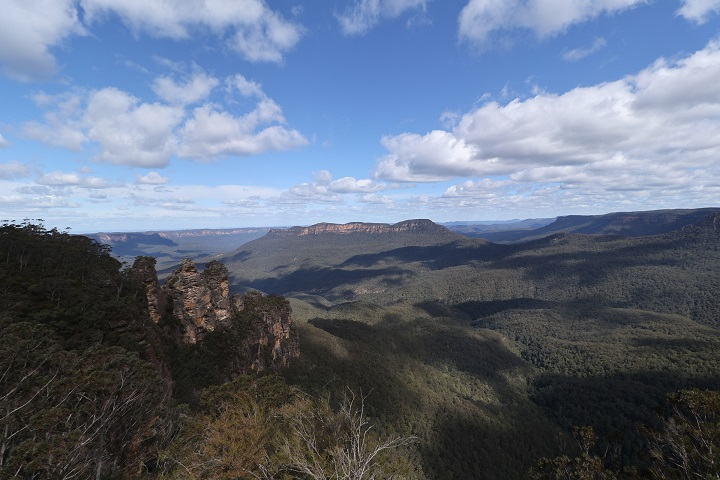

２０２４年９月、オーストラリア旅行日記
El diario de Australia
久しぶりにちょっと長い海外旅行

Preparación para el viaje ★
Salida a Australia【 Sídney 】 ★
El segundo día en Australia【 Hobart 】 ★
El tercer día en Australia【 Puerto Arthur 】 ★
El cuarto día en Australia【 Brisbane 】 ★
El quinto día en Australia【 Uluru 】 ★
El sexto día en Australia【 Uluru 】 ★
El séptimo día en Australia【 La Isla Canguro 】 ★
El octavo día en Australia【 Adelaide 】 ★
El El noveno día en Australia【 Montañas Azules & Sídney 】 ★
El último día en Australia ★
Hoteles en Australia
ciudad
link
Sidney
ibis budget Sydney Airport
Hobart
Hobart Waterfront Apartments
Brisbane
Rydges Fortitude Valley
Uluru
The Lost Camel Hotel
Adelaide
Adelaide Paringa